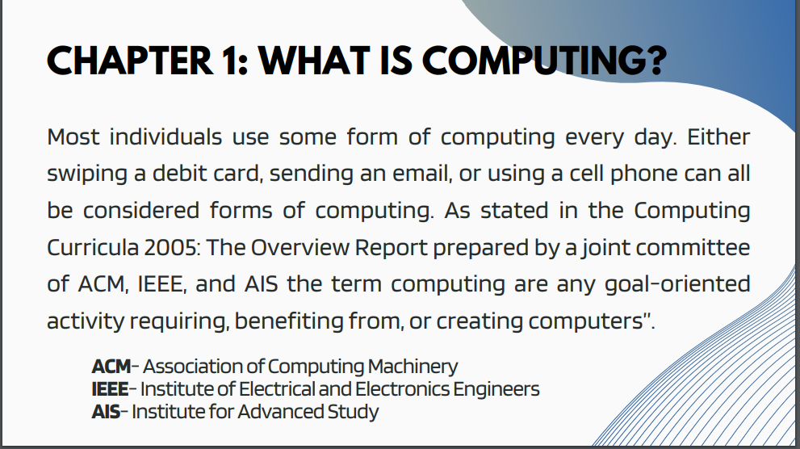
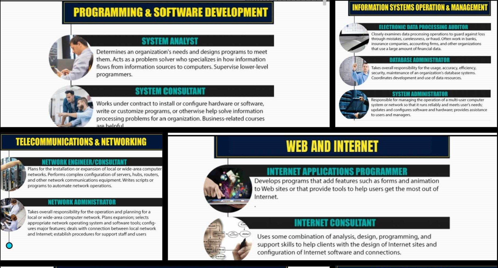
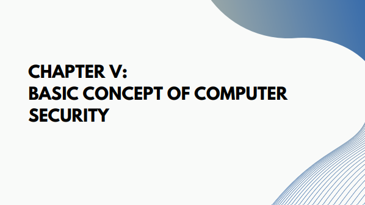

-

CHAPTER I: WHAT IS COMPUTING
This chapter explores how computers are central to our daily lives through new applications and activities Debit cards and smartphones, have been growing for a long time. It highlights key events, from the era From large appliances to modern compact and powerful appliances, there are even advances like vacuums tubes and transistors. Continued development of computers, social impact, . and the constant pursuit of progress and speed.
-

CHAPTER II: PROFESSIONS & CAREERS IN COMPUTING
This chapter examines various computing tasks, emphasizing the broad role of computing in modern life. It focuses on specific job groups, such as database analytics and software engineering, which identify core activities such as systems analysts. The chapter highlights and promotes the growing potential of computer-related careers To enable students to visualize their future contributions to organizations and society.
-
CHAPTER III: THE INFORMATION PROCESSING CYCLE
The chapter describes the information processing cycle in detail and outlines the various processes used Information, such as input, use, storage, and output. This highlights the difference data (fake facts) and information (structured, useful data). It explains that data processing includes turning raw data into valuable insights.
-

CHAPTER IV: INTRODUCTION TO COMPUTER SYSTEMS
This chapter describes computer systems that include hardware (physical), . software (manuals), peopleware (users), and dataware (data management tools). It shows that The interconnectedness of these factors. Overall, the courses provide a rough overview of how computers work information processing, components, and roles in collaborative work to develop computers More effective systems for different purposes.
-

CHAPTER V: BASIC CONCEPT OF COMPUTER SECURITY
This chapter covers the basics of cybersecurity, emphasizing its importance Data protection by means such as encryption. It leads to division of information and addresses that protect personal information. The text examines the prevalence and types of cybercrime cybercriminals, and countermeasures, including network encryption and cyber liability insurance.
-

THE MOST CHALLENGING LESSON
It is a very challenging lesson in my introduction to my computer course It involves HTML and CSS. These talks help me overcome procrastination, especially in our finals A project to build a personal website, providing a clear roadmap for creating web content. Understanding HTML and CSS broadens my perspective on web design, boosts my confidence and. Inspiration when I capture every element and style. Now, building a website can feel like an exciting challenge, . It allows you to express creativity and overcome challenges step by step